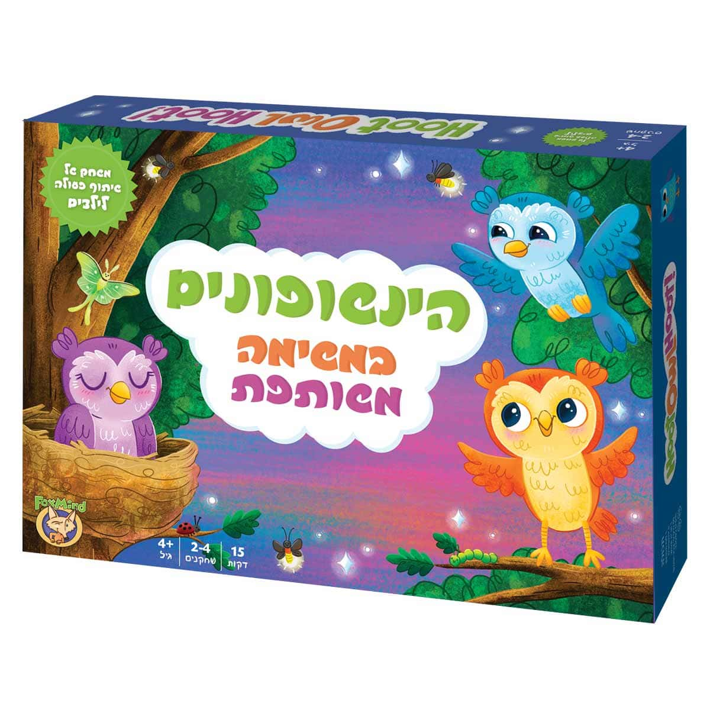

משחקים · גיל 4 עד 5
3 משחקי קופסה לגיל 4 עד 5
שבהם מתרגלים לחכות לתור

משחקים · גיל 4 עד 5
בסביבות גיל 5
הרבה ילדים כבר מחכים לתור
יש שמגיעים לזה קודם ויש שאחר כך
מה שעוזר בגיל הזה
תור קצר וחוק אחד ברור
מגיל 3
משוך בגזר
מסובבים את החץ ושולפים גזרים לפי המספר
כל תור קצר והחוק ברור
תנו לו להעביר את החץ לבא בתור
ולהגיד בקול ״עכשיו התור שלך״
מגיל 4
הינשופונים במשימה משותפת
כולם מנצחים או מפסידים ביחד
אז גם התור של מישהו אחר עוזר לך
במשחק הראשון שחקו עם 2 ינשופונים
והקלפים גלויים על השולחן
מגיל 4
עץ הקופים
מטילים קובייה ושולפים מקל אחד בצבע שיצא
רק יד אחת נוגעת בעץ בכל תור
מעבירים כפית למי שבתור
ורק מי שמחזיק אותה נוגע בעץ
ועוד רעיון לערב שאחרי המשחק
בלומבוק יש ספר שבו הילד שלכם הוא הגיבור
של טורניר שמפסידים בו ומנסים שוב
ואפשר לקרוא אותו בתורות
עמוד אתם ועמוד הוא
תור קצר
חוק אחד ברור
ומשהו לראות בזמן שמחכים
שמרו לערב המשחקים הבא
ואיזה משחק עובד אצלכם? ספרו בתגובות